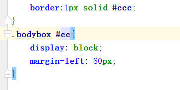

唐山现代男科项目规范
( 2 )代码规范
-
- 1.CSS多于五行，需写入css文件中，尽量避免行内样式的出现;
-
- 2.tab统一采用4个空格符进行缩进;
-
- 3.选择器 与 { 之间必须包含空格
-
- 4.css书写时分句换行。

-
- 5.尽量避免使用 >、+、~ 等选择器。相对耗时较高
-
- 6.属性选择器中的值必须用双引号包围。且尽量少使用属性选择器，会消耗过多的计算机性能
-
- 7.如无必要，不得为用id作为样式选择器。防止id冲突
- 
-
- 9.选择器的嵌套层级应不大于3级，位置靠后的限定条件应尽可能精确
-
- 10.在可以使用缩写的情况下，尽量使用属性缩写，尽量不要分开来写，如下图